공조냉동기계산업기사 (2013-03-10 기출문제)
1과목: 공기조화
1. 통과풍량이 320m3/min일 때 표준 유닛형 에어필터(통과풍속 1.4m/s, 통과면적 0.30m2)의 수는 약 몇 개인가? (단, 유효면적은 80% 이다.)
- 13개
- 14개
- 15개
- 16개
(정답률: 67%)

2. 난방 방식 중 낮은 실온에서도 균등한 쾌적감을 얻을 수 있는 방식은?
- 복사난방
- 대류난방
- 증기난방
- 온풍로난방
(정답률: 92%)
3. 다음과 같은 습공기선도상의 상태에서 외기부하를 나타내고 있는 것은?
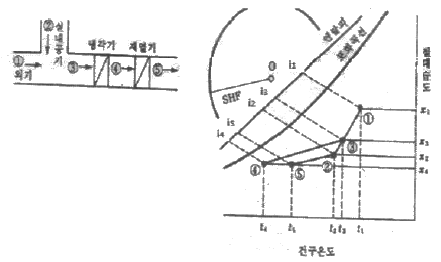
- G(i3-i4)
- G(i5-i4)
- G(i3-i2)
- G(i2-i5)
(정답률: 82%)
4. 냉방부하 종류 중에 현열로만 이루어진 부하로 맞는 것은?
- 조명에서의 발생열
- 인체에서의 발생열
- 문틈에서의 틈새바람
- 실내기구에서의 발생열
(정답률: 88%)
5. HEPA 필터에 적합한 효율 측정법은?
- weight법
- NBS법
- dust spot법
- DOP법
(정답률: 92%)
6. 냉방 시 침입외기가 200m3/h일 때 침입외기에 의한 손실 부하는 약 얼마인가? (단, 외기는 32℃ DB, 0.018 kg/kg DA, 실내는 27℃ DB, 0.013kg/kg DA이며, 침입외기 밀도 1.2kg/m3, 건공기 정압비열 1.01kJ/h, 물의 증발잠열 2501kJ/kg이다.)
- 3001kJ/h
- 1215kJ/h
- 4213kJ/h
- 5655kJ/h
(정답률: 56%)
7. 다음 그림의 방열기 도시기호 중 ‘W-H'가 나타내는 의미는 무엇인가?
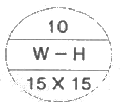
- 방열기 쪽수
- 방열기 높이
- 방열기 종류(형식)
- 연결배관의 종류
(정답률: 92%)
8. 열동식 트랩에 대한 설명 중 옳은 것은?
- 방열기에 생긴 응축수를 증기와 분리하여 보일러에 환수시키는 역할을 한다.
- 방열기내에 머무르는 공기만을 분리하여 제거하는 역할을 한다.
- 열동식 트랩은 열역학적 트랩의 일종이다.
- 방열기에서 발생하는 응축수는 분리하여 방열기에 오랫동안 머무르게 하고 증기를 배출하는 역할을 한다.
(정답률: 68%)
9. 공기조화를 위한 사무실의 외기온도 -10℃, 실내온도 22℃일 때 면적 20m2을 통하여 손실되는 열량은 얼마인가? (단, 구조체의 열관류율은 2.1kcal/m2h℃이다.)
- 41kcal/h
- 504kcal/h
- 820kcal/h
- 1344kcal/h
(정답률: 60%)
10. 공기조화 설비방식의 일반 열원방식 중 2중 효용 흡수식 냉동기와 보일러를 사용하여 구성되는 공조방식의 관련된 장치가 아닌 것은?
- 발생기, 흡수기, 입형보일러
- 응축기, 증발기, 관류보일러
- 재생기, 응축기, 노통연관보일러
- 응축기, 압축기, 수관보일러
(정답률: 74%)
11. 공기조화방식의 분류 중 전공기 방식에 해당되지 않는 것은?
- 유인유닛 방식
- 정풍량 단일덕트 방식
- 2중덕트 방식
- 변풍량 단일덕트 방식
(정답률: 85%)
12. 습공기의 상태를 나타내는 요소에 대한 설명 중 맞는 것은?
- 상대습도는 공기 중에 포함된 수분의 량을 계산하는데 사용한다.
- 수증기 분압에서 습공기가 가진 압력(보통 대기압)은 그 혼합성분인 건공기와 수증기가 가진 분압의 합과 같다.
- 습구온도는 주위공기가 포화증기에 가까우면 건구온도와의 차는 커진다.
- 엔탈피는 0℃ 건공기의 값을 593 kcal/kg으로 기준하여 사용한다.
(정답률: 63%)
13. 구조체에서의 손실부하 계산시 내벽이나 중간층 바닥의 손실부하를 구하고자 할 때 적용하는 온도차를 구하는 공식은? (단, tr : 실내의 온도, to : 실외의 온도)
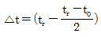
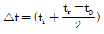
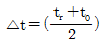
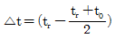
(정답률: 65%)
14. 인텔리전트 빌딩과 같이 냉방부하가 큰 건물이나 백화점과 같이 잠열부하가 큰 건물에서 송풍량과 덕트 크기를 크게 늘리지 않고자 할 때, 공조방식으로 적합한 것은?
- 바닥취출 공조방식
- 저온공조방식
- 팬코일 유닛방식
- 재열코일방식
(정답률: 68%)
15. 열교환기를 구조에 따라 분류하였을 때 판형 열교환기의 종류에 해당하지 않는 것은?
- 플레이트식 열교환기
- 캐틀형 열교환기
- 플레이트핀식 열교환기
- 스파이럴형 열교환기
(정답률: 73%)
16. 직교류형 냉각탑과 대향류형 냉각탑을 비교하였다. 직교류형 냉각탑의 특징으로 틀린 것은?
- 물과 공기 흐름이 직각으로 교차한다.
- 냉각탑 설치 면적은 크고, 높이는 낮다.
- 대향류형에 비해 효율이 좋다.
- 냉각탑 중심부로 갈수록 온도가 높아진다.
(정답률: 78%)
17. 기화식(증발식) 가습장치의 종류로 옳은 것은?
- 원심식, 초음파식, 분무식
- 전열식, 전극식, 적외선식
- 과열증기식, 분무식, 원심식
- 회전식, 모세관식, 적하식
(정답률: 83%)
18. 증기난방의 장점으로 틀린 것은?
- 열의 운반능력이 크고, 예열시간이 짧다.
- 한량지에서 동결의 우려가 적다.
- 환수관의 내부부식이 지연되어 간관의 수명이 길다.
- 온수난방에 비하여 방열기의 방열면적이 작아진다.
(정답률: 69%)
19. 공기 세정기의 구조에서 앞부분에 세정실이 있고 물방울의 유출을 방지하기 위해 뒷부분에는 무엇을 설치하는가?
- 배수관
- 유닛 히트
- 유량조절밸브
- 엘리미네이터
(정답률: 88%)
20. A상태에서 B상태로 가는 냉방과정에서 현열비는?
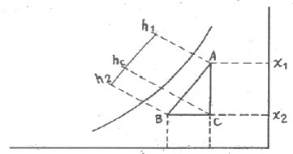
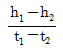
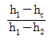
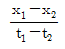
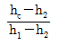
(정답률: 73%)
2과목: 냉동공학
21. 다음 조건을 갖는 수냉식 응축기의 전열 면적은 약 얼마인가? (단, 응축기 입구의 냉매가스의 엔탈피는 450kcal/kg, 응축기 출구의 냉매약의 엔탈피는 150kcal/kg, 냉매 순환량은 100kg/h, 응축온도는 40℃, 냉각수 평균온도는 33℃, 응축기의 열관류율은 800kcal/m2h℃이다.)
- 3.86m2
- 4.56m2
- 5.36m2
- 6.76m2
(정답률: 56%)
22. 0.02kg의 기체에 100J의 일을 가하여 단열 압축하였을 때 기체 내부에너지 변화는 약 얼마인가?
- 1.87kcal/kg
- 1.54kcal/kg
- 1.39kcal/kg
- 1.19kcal/kg
(정답률: 49%)
23. 흡수식냉동기의 구성품 중 왕복동 냉동기의 압축기와 같은 역할을 하는 것은?
- 발생기
- 증발기
- 응축기
- 순환펌프
(정답률: 83%)
24. 냉동장치의 액분리기에 대한 설명 중 맞는 것으로만 짝지어진 것은?
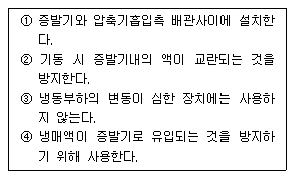
- ①, ②
- ③, ④
- ①, ③
- ②, ③
(정답률: 82%)
25. 이상 기체를 정압하에서 가열하면 체적과 온도의 변화는 어떻게 되는가?
- 체적증가, 온도상승
- 체적일정, 온도일정
- 체적증가, 온도일정
- 체적일정, 온도상승
(정답률: 85%)
26. 온도식 팽창밸브(Thermostatic expansion valve)에 있어서 과열도란 무엇인가?
- 고압측 압력이 너무 높아져서 액냉매의 온도가 충분히 낮아지지 못할 때 정상시와의 온도차
- 팽창밸브가 너무 오랫동안 작용하면 밸브 시이트가 뜨겁게 되어 오동작 할 때 정상시와의 온도차
- 흡입관내의 냉매가스 온도와 증발기내의 포화온도 와의 온도차
- 압축기와 증발기속의 온도보다 1℃ 정도 높게 설정되어 있는 온도와의 온도차
(정답률: 68%)
27. 10kW의 모터를 1시간 동안 작동시켜 어떤 물체를 정지시켰다. 이 때 사용된 에너지는 모두 마찰열로 되어 t=20℃의 주위에 전달되었다면 엔트로피의 증가는 약 얼마인가?
- 29.4 kcal/kg K
- 39.4 kcal/kg K
- 49.4 kcal/kg K
- 59.4 kcal/kg K
(정답률: 41%)
28. 암모니아 냉동기에서 유분리기의 설치위치로 가장 적당한 곳은?
- 압축기와 응축기 사이
- 응축기와 팽창변 사이
- 증발기와 압축기 사이
- 팽창변과 증발기 사이
(정답률: 74%)
29. 압축기의 용량제어 방법 중 왕복동 압축기와 관계가 없는 것은?
- 바이패스법
- 회전수 가감법
- 흡입 베인 조절법
- 클리어런스 증가법
(정답률: 57%)
30. 프레온 냉동장치에 수분이 혼입됐을 때 일어나는 현상이라고 볼 수 있는 것은?
- 수분과 반응하는 양이 매우 적어 뚜렷한 영향을 나타내지 않는다.
- 수분이 혼입되면 황산이 생성된다.
- 고온부의 냉동장치에 동 부착(도금)현상이 나타난다.
- 유탁액(emulsion)현상을 일으킨다.
(정답률: 76%)
31. 50RT의 브라인 쿨러에서 입구온도 -15℃일 때 브라인의 유량이 0.5m3/min이라면 출구의 온도는 약 몇 ℃인가? (단, 브라인의 비중은 1.27, 비열은 0.66kcal/kg℃, 1RT는 3320kcal/h 이다.)
- -20.3℃
- -21.6℃
- -11℃
- -18.3℃
(정답률: 58%)
32. 온도식 자동팽창밸브 감온통의 냉매충전 방법이 아닌 것은?
- 액충전
- 벨로스충전
- 가스충전
- 크로스충전
(정답률: 52%)
33. 액체 냉매를 가열하면 증기가 되고 더 가열하면 과열증기가 된다. 단위열량을 공급할 때 온도상승이 가장 큰 것은?
- 과냉액체
- 습증기
- 과열증기
- 포화증기
(정답률: 77%)
34. 흡수식 냉동기에 관한 설명 중 옳은 것은?
- 초저온용으로 사용된다.
- 비교적 소용량 보다는 대용량에 적합하다.
- 열 교환기를 설치하여도 효율은 변함없다.
- 물-LiBr식에서는 물이 흡수제가 된다.
(정답률: 80%)
35. 자동제어의 목적이 아닌 것은?
- 냉동장치 운전상태의 안정을 도모한다.
- 냉동장치의 안전을 유지한다.
- 경제적인 운전을 꾀한다.
- 냉동장치의 냉매 소비를 절감한다.
(정답률: 79%)
36. 다음 중 냉매의 구비조건으로 틀린 것은?
- 전기저항이 클 것
- 불활성이고 부식성이 없을 것
- 응축 압력이 가급적 낮을 것
- 증기의 비체적이 클 것
(정답률: 70%)
37. 프레온 냉동장치에서 압축기 흡입배관과 응축기 출구배관을 접촉시켜 열 교환 시킬 때가 있다. 이 때 장치에 미치는 영향으로 옳은 것은?
- 압축기 운전 소요동력이 다소 증가한다.
- 냉동 효과가 증가한다.
- 액백(liquid back)이 일어난다.
- 성적계수가 다소 감소한다.
(정답률: 72%)
38. 염화나트륨 브라인의 공정점은 몇 ℃ 인가?
- -55℃
- -42℃
- -36℃
- -21℃
(정답률: 71%)
39. 주위압력이 750mmHg인 냉동기의 저압 gauge가 100mmHgv를 나타내었다. 절대압력은 약 몇 kgf/cm2인가?
- 0.5
- 0.73
- 0.88
- 0.96
(정답률: 58%)
40. 암모니아 냉동기의 증발온도 -20℃, 응축온도 35℃일 때 이론 성적계수(①)와 실제 성적계수(②)는 약 얼마인가? (단, 팽창밸브 직전의 액온도는 32℃, 흡입가스는 건포화증기이고, 체적효율은 0.65, 압축효율은 0.80, 기계효율은 0.9로 한다.)
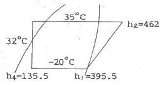
- ①0.5, ②3.8
- ①3.5, ②2.5
- ①3.9, ②2.8
- ①4.3, ②2.8
(정답률: 75%)
3과목: 배관일반
41. 급탕 주관의 배관길이가 300m, 환탕 주관의 배관길이가 50m 일 때 강제순환식 온수순환 펌프의 전 양정은 얼마인가?
- 5m
- 3m
- 2m
- 1m
(정답률: 60%)
42. 배관지지 금속 중 리스트레인트(restraint)에 속하지 않는 것은?
- 행거
- 앵커
- 스토퍼
- 가이드
(정답률: 71%)
43. 동관의 이음으로 적합하지 않은 것은?
- 납땜 이음
- 플레어 이음
- 플랜지 이음
- 타이튼 이음
(정답률: 71%)
44. 배수관이나 통기관의 배관 후 누설 검사방법으로 적당하지 않은 것은?
- 수압시험
- 기압시험
- 연기시험
- 통관시험
(정답률: 69%)
45. 배관 내 마찰 저항에 의한 압력 손실의 설명으로 옳은 것은?
- 관의 유속에 비례한다.
- 관 내경의 2승에 비례한다.
- 관 내경의 5승에 비례한다.
- 관의 길이에 비례한다.
(정답률: 59%)
46. 고층 건물이나 기구수가 많은 건물에서 입상관까지의 거리가 긴 경우, 루프통기관의 효과를 높이기 위해 설치된 통기관은?
- 도피 통기관
- 결합 통기관
- 공용 통기관
- 신정 통기관
(정답률: 74%)
47. 다음 중 냉ㆍ온수 헤더에 설치하는 부속품이 아닌 것은?
- 압력계
- 드레인관
- 트랩장치
- 급수관
(정답률: 79%)
48. 냉매배관 설계 시 잘못된 것은?
- 2중 입상관(Riser)사용시 트랩을 크게 한다.
- 과도한 압력강하를 방지한다.
- 압축기로 액체 냉매의 유입을 방지한다.
- 압축기를 떠난 윤활유가 일정비율로 다시 압축기로 되돌아 오게 한다.
(정답률: 81%)
49. 압축공기 배관시공 시 일반적인 주의사항으로 틀린 것은?
- 공기 공급배관에는 필요한 개소에 드레인용 밸브를 장착한다.
- 주관에서 분기관을 취출할 때에는 관의 하단에 연결하여 이물질 등을 제거한다.
- 용접개소는 가급적 적게 하고 라인의 중간 중간에 여과기를 장착하여 공기중에 섞인 먼지 등을 제거한다.
- 주관 및 분기관의 관 끝에는 과잉의 압력을 제거하기 위한 불어내기(blow)용 게이트 밸브를 달아준다.
(정답률: 64%)
50. 도시가스 내 부취제의 액체 주입식 부취설비 방식이 아닌 것은?
- 펌프 주입 방식
- 적하 주입 방식
- 미터연결 바이패스 방식
- 위크식 주입 방식
(정답률: 75%)
51. 열을 잘 반사하고 확산하므로 난방용 방열기 표면 등의 도장용으로 사용되는 도료는?
- 광명단 도료
- 산화철 도료
- 합성수지 도료
- 알루미늄 도료
(정답률: 75%)
52. 개별식 급탕법에 비해 중앙식 급탕법의 장점으로 적합하지 않은 것은?
- 배관의 길이가 짧아 열손실이 적다.
- 탕비 장치가 대규모이므로 열효율이 좋다.
- 초기시설비가 비싸지만 경상비가 적어 대규모 급탕에는 경제적이다.
- 일반적으로 다른 설비기계류와 동일한 장소에 설치되므로 관리상 유효하다.
(정답률: 69%)
53. 방열기의 환수구에 설치하여 증기와 드레인을 분리하여 환수시키고 공기도 배출시키는 트랩은?
- 열동식 트랩
- 플로트 트랩
- 상향식 버킷트랩
- 충격식 트랩
(정답률: 59%)
54. 증기 또는 온수난방에서 2개 이상의 엘보를 이용하여 배관의 신축을 흡수하는 신축이음쇠는?
- 스위블형 신축이음쇠
- 벨로우즈형 신축이음쇠
- 볼 조인트형 신축이음쇠
- 슬리이브형 신축이음쇠
(정답률: 82%)
55. 배수설비에 대한 설명으로 틀린 것은?
- 건물 내에서 나오는 오수와 잡수 등을 배출한다.
- 펌프 유무에 따라 중력식과 기계식으로 분류한다.
- 정화조에서 정화되어 나오는 것은 처리할 수 없다.
- 오수, 잡수 등을 모아서 내 보내는 합류식이 있다.
(정답률: 85%)
56. 증기난방의 응축수 환수방법이 아닌 것은?
- 중력 환수식
- 기계 환수식
- 상향 환수식
- 진공 환수식
(정답률: 71%)
57. 고온 배관용 탄소강관은 몇 ℃의 고온 배관에 사용되는가?
- 230℃이하
- 250 ~ 270℃
- 280 ~ 310℃
- 350℃이상
(정답률: 83%)
58. 배관 재료에서의 열응력 요인이 아닌 것은?
- 열팽창에 의한 응력
- 열간가공에 의한 응력
- 용접에 의한 응력
- 안전밸브의 분출에 의한 응력
(정답률: 73%)
59. 급수설비에서 수격작용 방지를 위하여 설치하는 것은?
- 에어챔버(air chamber)
- 앵글밸브(angle valve)
- 서포트(support)
- 볼탭(ball tap)
(정답률: 86%)
60. 보일러를 장기간 사용하지 않을 때 부식방지를 위하여 내부에 충진하는 가스로 적합한 것은?
- 이산화탄소
- 아황산가스
- 질소가스
- 산소가스
(정답률: 82%)
4과목: 전기제어공학
61. 미리 정해진 프로그램에 따라 제어량을 변화시키는 것을 목적으로 한 제어는?
- 정치제어
- 추종제어
- 프로그램제어
- 비례제어
(정답률: 78%)
62. 전력선, 전기기기 등 보호대상에 발생한 이상상태를 검출하여 기기의 피해를 경감시키거나 그 파급을 저지하기 위하여 사용되는 것은?
- 보호계전기
- 보조계전기
- 전자접촉기
- 시한계전기
(정답률: 86%)
63. 자동제어를 분류할 때 제어량에 의한 분류가 아닌 것은?
- 정치제어
- 서보기구
- 프로세스제어
- 자동조정
(정답률: 49%)
64. 서미스터에 대한 설명으로 옳은 것은?
- 열을 감지하는 감열 저항체 소자이다.
- 온도상승에 따라 전자유도현상이 크게 발생되는 소자이다.
- 구성은 규소, 아연, 납 등을 혼합한 것이다.
- 화학적으로는 수소화물에 해당된다.
(정답률: 72%)
65. 다음의 논리식 중 다른 값을 나타내는 논리식은?
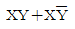
- X(X+Y)
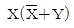
- X+XY
(정답률: 67%)
66. 직렬공진 시 RLC 직렬회로에 대한 설명으로 잘못된 것은?
- 회로에 흐르는 전류는 최대가 된다.
- 회로에는 유효전력이 발생되지 않는다.
- 회로의 합성 임피던스가 최소가 된다.
- R에 걸리는 전압이 공급전압과 같게 된다.
(정답률: 63%)
67. 금속 도체의 전지저항은 일반적으로 온도와 어떤 관계가 있는가?
- 온도 상승에 따라 감소한다.
- 온도와는 무관하다.
- 저온에서 증가하고 고온에서 감소한다.
- 온도 상승에 따라 증가한다.
(정답률: 69%)
68. 60[Hz]에서 회전하고 있는 4극 유도전동기의 출력이 10[kW]일 때 전동기의 토크는 약 몇 [Nㆍm]인가?
- 48
- 53
- 63
- 84
(정답률: 50%)
69. 조절부로부터 받은 신호를 조작량으로 바꾸어 제어대상에 보내주는 피드백 제어의 구성요소는?
- 궤한신호
- 조작부
- 제어량
- 신호부
(정답률: 67%)
70. 논리함수 X=B(A+B)를 간단히 하면?
- X=A
- X=B
- X=AㆍB
- X=A+B
(정답률: 72%)
71. sin⍵t를 라플라스 변환하면?
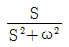
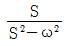
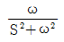
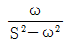
(정답률: 77%)
72. 정성적 제어에서 전열기의 제어 명령이 되는 신호는 전열기에 흐르는 전류를 흐르게 한다단가 아니면 차단하면 된다. 이와 같은 신호를 무엇이라 하는가?
- 목표값 신호
- 제어 신호
- 2진 신호
- 3진 신호
(정답률: 69%)
73. 3상 부하가 Y결선되어 각 상의 임피던스가 Za=3[Ω], Zb=3[Ω], Zc=j3[Ω]이다. 이 부하의 영상임피던스는 몇 [Ω]인가?
- 2+j1
- 3+j3
- 3+j6
- 6+j3
(정답률: 49%)
74. 전동기의 회전방향과 전자력에 관계가 있는 법칙은?
- 플레밍의 왼손법칙
- 플레밍의 오른손법칙
- 패러데이의 법칙
- 암페어의 법칙
(정답률: 71%)
75. 서보기구의 제어량에 속하는 것은?
- 유량
- 압력
- 밀도
- 위치
(정답률: 80%)
76. 안정될 필요조건을 갖춘 특성방정식은?
- s4+2s2+5s+5=0
- s3+s2-3s+10=0
- s3+3s2+3s-3=0
- s3+6s2+10s+9=0
(정답률: 78%)
77. 200[V]의 전압에서 2[A]의 전류가 흐르는 전열기를 2시간 동안 사용했을 때의 소비전력량은 몇 [kWh]인가?
- 0.4
- 0.6
- 0.8
- 1.0
(정답률: 62%)
78. 2 전력계법으로 전력을 측정하였더니 P1=4[W], P2=3[W]이었다면 부하의 소비전력은 몇 [W] 인가?
- 1
- 5
- 7
- 12
(정답률: 69%)
79. 그림과 같은 RLC 직렬회로에서 직렬공진회로가 되어 전류와 전압의 위상이 동위상이 되는 조건은?
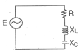
- XL>XC
- XL
- XL-XC=0
- XL-XC=R
(정답률: 72%)
80. 맥동 주파수가 가장 많고 맥동률이 가장 적은 정류방식은?
- 단상 반파정류
- 단상 전파정류
- 3상 반파정류
- 3상 전파정류
(정답률: 72%)
유효통과풍량 = 통과면적 x 통과풍속 x 유효면적
= 0.30m^2 x 1.4m/s x 0.80
= 0.336m^3/s
따라서, 필요한 필터의 수는 다음과 같이 구할 수 있다.
필터의 수 = 총 통과풍량 / 유효통과풍량
= (320m^3/min x 60s/min) / 0.336m^3/s
= 57,143개
하지만, 필터는 정수로 구매해야 하므로, 가장 가까운 정수인 16개를 선택한다.